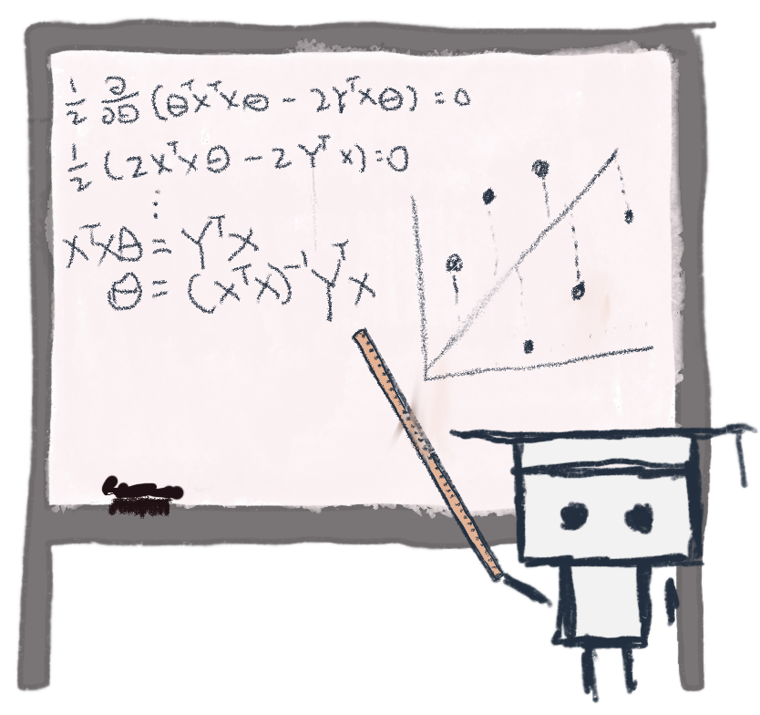
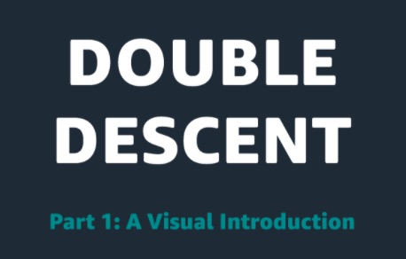
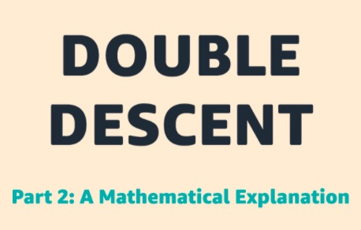

Explore one of machine learning's most popular supervised algorithms: the Decision Tree. Learn how the tree makes its splits, the concepts of Entropy and Information Gain, and why going too deep is problematic.
Visual explanations of core machine learning concepts
Machine Learning University (MLU)
is an education initiative from Amazon designed to teach machine
learning theory and practical application.
As part of that goal,
MLU-Explain exists to teach important
machine learning concepts through visual essays in a fun,
informative, and accessible manner.

Explore Published Articles...


Meet the double descent phenomenon in modern machine learning: what it is, how it relates to the bias-variance tradeoff, the importance of the interpolation regime, and a theory of what lies behind.

Deepen your understanding of the double descent phenomenon. The article builds on the cubic spline example introduced in Double Descent 1, describing in mathematical detail what is happening.

Understand the tradeoff between under- and over-fitting models, how it relates to bias and variance, and explore interactive examples related to LOESS and KNN.